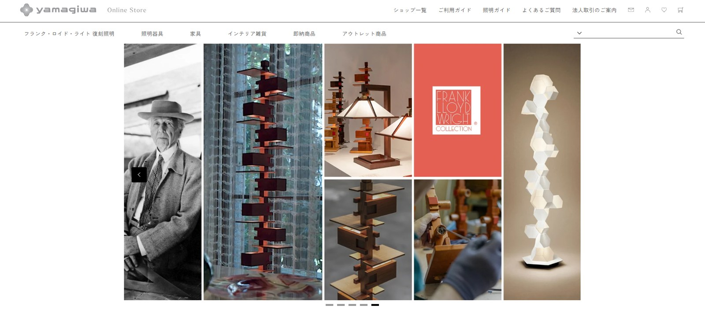
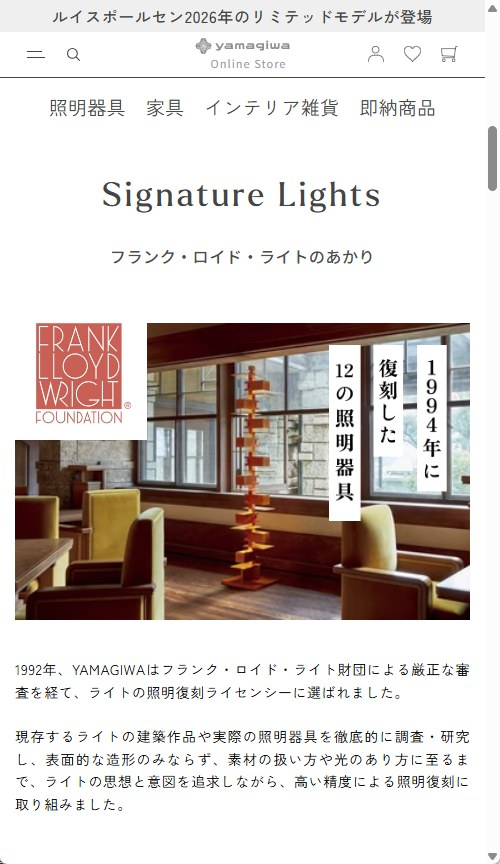
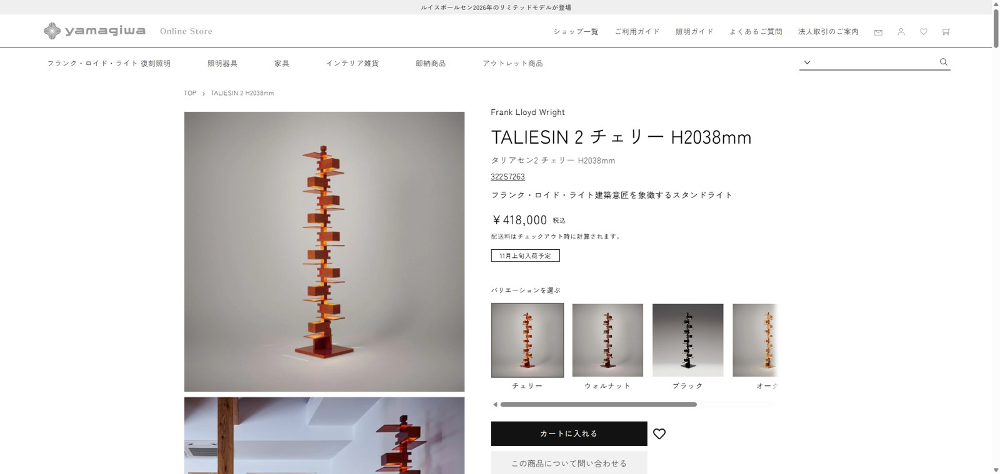
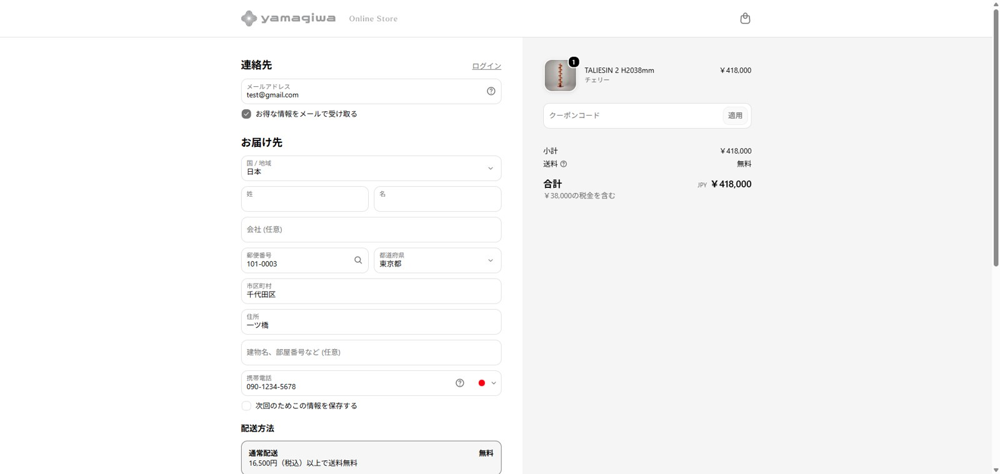

ECサイトリニューアル
購入までの8ステップを、4ステップへ。
旧カートでは購入完了までに約8ステップを要し、カート離脱率の高さが課題となっていました。また、画面改修や機能追加にも時間を要していたため、購入導線の改善と運用の柔軟性向上を目的にShopifyへ移行。2024年11月に新サイトを公開しました。

算出：1 −（購入数 ÷ カート到達数）
比較期間：2024年12月〜2025年2月の月次離脱率の3カ月平均を、前年同期と比較
Purpose目的
検索流入の減少を踏まえ、購入完了率の改善と、継続的に運用・改善できるEC基盤の構築を目指す。
Issue課題
購入ステップの多さによる高いカート離脱率と、改修に時間を要する既存システムが課題となっていた。
Action施策
Shopifyへの移行に向けた要件整理と施策の優先順位づけを行い、社内の関係部署・制作会社と連携しながら購入導線の改善を推進した。
Purchase Flow購入フローの見直し
購入フローの模式図。購入完了までの画面遷移を整理し、入力・確認の負担を軽減。購入手続きのステップ数を8から4へ削減しました。




Why Shopify選定で重視したこと
購入導線の改善と、
運用の柔軟性を重視。
既存カートでは、改修や機能追加のたびに時間がかかり、改善施策を迅速に実施しにくい状況でした。購入手続きの簡略化に加え、公開後も継続的に改善できる運用環境を重視し、Shopifyへの移行を進めました。
| 判断観点 | 既存カート | Shopify |
|---|---|---|
| 購入導線 | 8ステップで離脱が多い | 手続きを簡略化できる構成 |
| 改善スピード | 画面変更や機能追加に時間がかかる | 改善施策を展開しやすい |
| 運用 | 改修の負担が大きい | 継続的な改善を進めやすい |
01 購入導線
購入完了までの画面数や入力負担を減らせること。
02 安定運用
セキュリティ対策やシステムの保守を継続しやすいこと。
03 改善スピード
UI変更や機能追加を迅速に進められること。
04 拡張性
外部サービスとの連携や将来の機能拡張に対応できること。
Coordination移行で調整したこと
URLの移行
既存の商品URLからShopifyの商品ページへ適切に遷移できるよう、型番を基準としたリダイレクトルールを設計。アプリの運用コストも考慮し、移行前のURLから商品を探すユーザーの導線を確保しました。
関係部署との連携
カートシステムの変更に伴う決済処理の変更について、経理部門と連携。また、社内の制作・カスタマー対応・デジタルマーケティングの各担当者と外部制作会社の間に立ち、要件や進捗を共有しながら移行を推進しました。
Projectプロジェクト情報
- 公開
- 2024年11月
- 立場
- 社内のプロジェクトリーダー
- 社内体制
- NET営業部（制作4名・カスタマー対応4名）、IT部（デジタルマーケティング2名）、経理部門
- 社外体制
- 外部制作会社と連携
- 担当
- 企画立案／要件整理／進行管理／購入導線の改善／関係部署・制作会社との調整